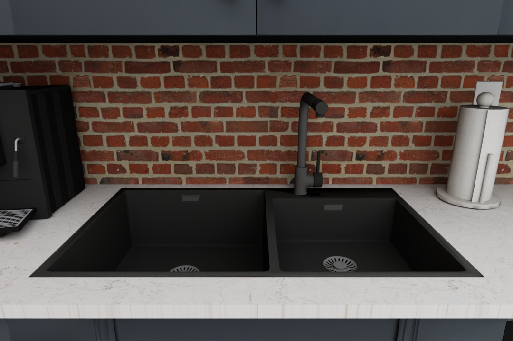
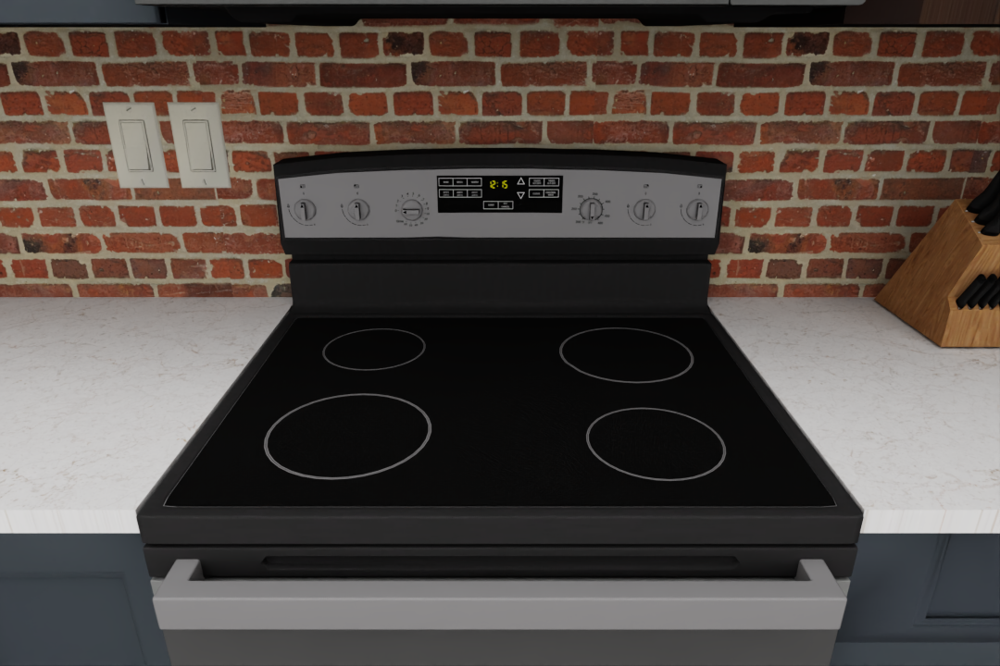

Fixtures#
Each kitchen scene contains a wide variety of interactable fixtures. Specifically, RoboCasa includes a total of 456 fixtures spanning 12 distinct categories.
| Category | Unique models |
|---|---|
| Blender | 22 |
| Coffee machine | 48 |
| Dishwasher | 25 |
| Electric kettle | 25 |
| Fridge | 50 |
| Microwave | 50 |
| Oven | 21 |
| Sink | 49 |
| Stand mixer | 25 |
| Stove | 50 |
| Toaster | 44 |
| Toaster oven | 47 |
| Total | 456 |
×

Microwave

Style
Sink

Style
Stove

Style